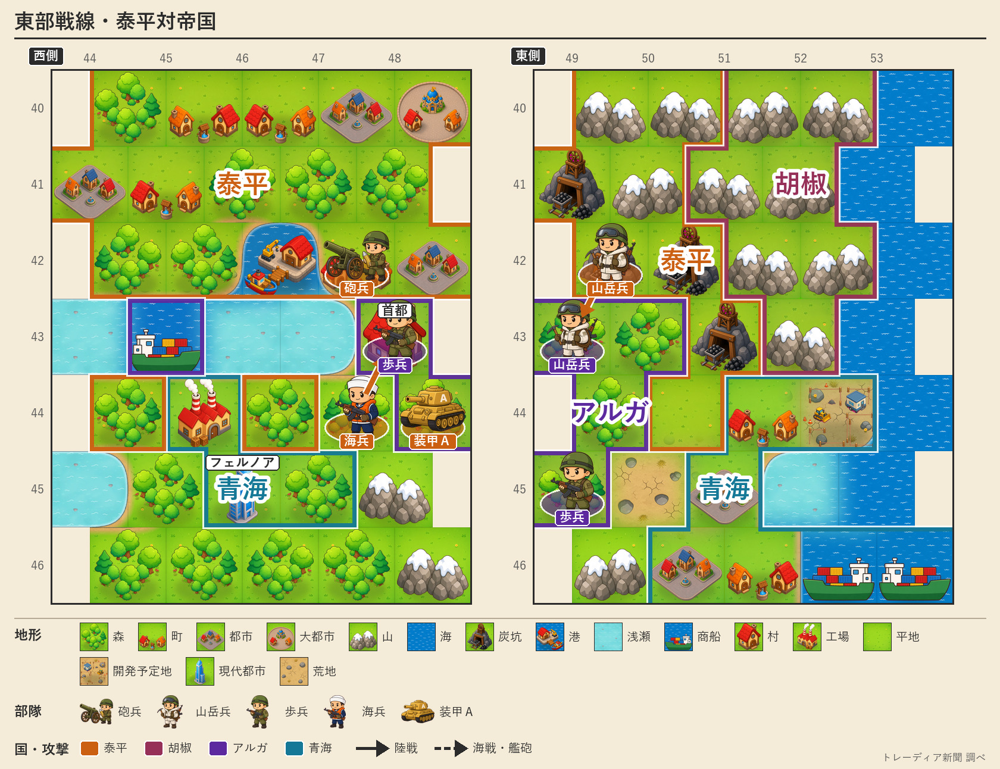

帝国、人口千七百人に
泰平は弾薬尽き「剣と槍」
崩れゆくアルガリスト帝国と、勝ちながら弾薬の尽きる泰平 東部戦線に浮かぶ消耗の深さ

【総合部】アルガリスト帝国の人口が第158期、千七百人まで減った。泰平天国は今期、帝国の山岳兵と歩兵の各一部隊を全滅させ、累計の損害を十三万九千三百人まで積み上げた。首都アルガリストはなお帝国領に残るが、国を支える民はほとんど尽きた。第133期から続いた戦いは、終わりの時が目前に迫っている。
だが、追い詰める泰平の側にも異変が起きた。今期、泰平のある部隊は「弾薬が足りず、剣と槍で戦った」と記録された。勝ち進む大国が、前線で弾を切らしている。世界の弾薬相場は五十六まで下がり、市場には弾が余っているのに、泰平の前線にはそれが届いていない。勝者の台所にも、ほころびがのぞく。帝国戦の詳報は3面、泰平の弾薬事情は7面。
黒潮、また都市を奪われ食糧を徴発される
カペレナ王国は黒潮自治国の都市を一つ占領し、同時に食糧三万六千六百トンを徴発した。黒潮の人口は一万六千二百人まで減った。都を失った小国は、糧まで削られている。詳報は4面。
春の火災、九万四千人
第158期の火災は九か国十九か所に及び、あわせて九万四千人が死亡した。白波王国では一つの大都市で一万人が死亡した。被害は前号を大きく上回った。詳報は6面。